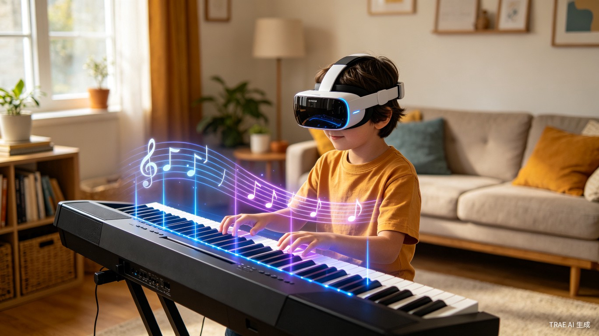

这是一套把真实琴键、XR 头显与移动端练习报告连接起来的混合现实自主学琴系统。它吸收了流行音游中“节奏轨道、连击反馈、评级结算、章节解锁”的体验优势，同时保留真实钢琴学习所需要的手感、节拍和动作训练。

钢琴初学最难的不是买琴，而是让孩子在前几个月持续获得正确、及时、可感知的正反馈。
五线谱、节拍、手型、键位需要同时理解。对孩子来说，“不知道该看哪里”往往比“不会弹”更早出现。
线下陪练按课时付费，线上视频课缺乏即时互动。家长自己不懂乐理，往往只能催练，却无法给出有效指导。
练错时没人提醒，练对时也没有奖励。孩子无法把“努力”与“成就”关联起来，于是很容易在 1–3 个月内放弃。
这一版不只是“把提示做得更炫”，而是借鉴流行音游最有效的留存机制，把孩子的练习过程变成更容易上手、更愿意重复的节奏挑战。
把课程拆成歌曲包、章节关卡和难度梯度，从单手旋律到双手配合逐步解锁，避免一开始就把孩子丢进“完整钢琴课”的高门槛里。
引入 Perfect / Good / Miss 式节奏判定、连击数和段落星级，让孩子明确知道自己为什么被鼓励、为什么失误。
通过勋章、角色皮肤、曲包解锁和每日任务，把“练习”重构为一段不断获得回报的成长旅程，而不是重复打卡。
如果按可落地 MVP 来定义，核心交付就是两个应用：XR 头显应用和移动端应用。机构后台可以作为后续扩展，而不是第一版硬性必需品。
这是主产品。孩子在这里完成选曲、校准、跟弹、闯关、结算和章节解锁，是“真正练琴”的发生场。
这是陪伴与运营端。第一阶段更适合作为家长端，负责看报告、接收建议、管理练习计划和激励孩子。
如果面向琴行或启蒙机构，可以增加 Web 管理后台，但它更适合第二阶段扩展，不是最小闭环必备件。
不是把钢琴课搬进虚拟世界，而是在真实琴面上叠加“能看懂、能跟上、能被奖励”的引导层。
把“看谱 → 找键 → 按下”的三步认知，压缩成“看见提示 → 动作完成”的单步交互。
孩子面对的仍是真实琴键而不是平面屏幕，避免形成与实际演奏脱节的错误手部经验。
通过每日任务、关卡目标和可视化成长反馈，让坚持不再依赖催促，而来自可见的进步。
启蒙机构可以把大量重复基础纠错交给系统，把老师时间留给示范、启发和个性化指导。
借鉴音游常见的“入场选择 → 实时挑战 → 评级结算 → 奖励推进”路径，让练习过程既有节奏感，也有清晰目标。
孩子先选择曲目、章节与难度。系统根据历史表现推荐“适合今天完成”的挑战，不让一上来就受挫。
头显识别琴键位置，系统对齐现实键盘与虚拟轨道，确认双手可见范围后进入正式关卡。
音符沿轨道下落，系统根据时机与键位给出 Perfect、Good 或 Miss 判定，并持续累计连击与积分。
练习结束后自动给出星级、分数、错误热区和下一关建议，并同步到移动端形成连续成长记录。
主界面采用“音游轨道 + 真实琴键”混合视图，把音游最强的节奏可视化和钢琴学习最关键的真实手感合并到同一空间里。
通过音符轨道、判定线、落键引导和实时评分，让孩子像玩节奏游戏一样投入，但每一次命中都发生在真实琴键上。
信息结构参考流行音游，但做了儿童学习化处理。所有反馈都围绕“是否命中、哪里失误、该继续还是放慢”这三件事展开。
结算页采用音游常见的“分数 + 等级 + 奖励”结构，但进一步补充学习建议，让娱乐反馈真正服务于训练。
移动端不替代练习，而是承接 XR 端之外的任务管理、成长追踪和亲子陪伴。第一版建议以家长端为主，同时兼顾孩子的曲包与成就查看。
今日目标、连练天数、推荐鼓励语和待完成曲目被放在同一屏，让家长一眼就能知道今天应该提醒什么、鼓励什么。
把错误热区、节拍稳定度、章节星级和勋章解锁整合在一起，让孩子和家长都能看到“玩下去”和“学下去”的双重动力。
真实硬件负责手感，XR 负责理解与反馈，移动端负责陪伴与复盘，三者一起构成完整练习闭环。
flowchart LR
A[孩子面对真实电子琴] --> B[XR 头显识别琴键位置]
B --> C[虚拟音符与指引光带叠加到真实键位]
C --> D[孩子按键跟弹]
D --> E[手部追踪 / 麦克风 / MIDI 判断正确性]
E --> F[即时反馈
颜色 提示音 鼓励动效]
F --> G[单次练习结果卡]
G --> H[移动端 App 同步成长报告]
H --> I[家长查看进步并给予鼓励]
I --> A
它不是在替代老师，而是在借用音游最成熟的反馈设计，把最容易流失的钢琴启蒙阶段改造成更有目标、更有成就感的学习体验。
XR 琴境 的核心不是“把钢琴学习娱乐化”，而是把音游里最成熟的节奏反馈、连击激励与结算机制，转化为真正有助于儿童钢琴启蒙的学习设计。